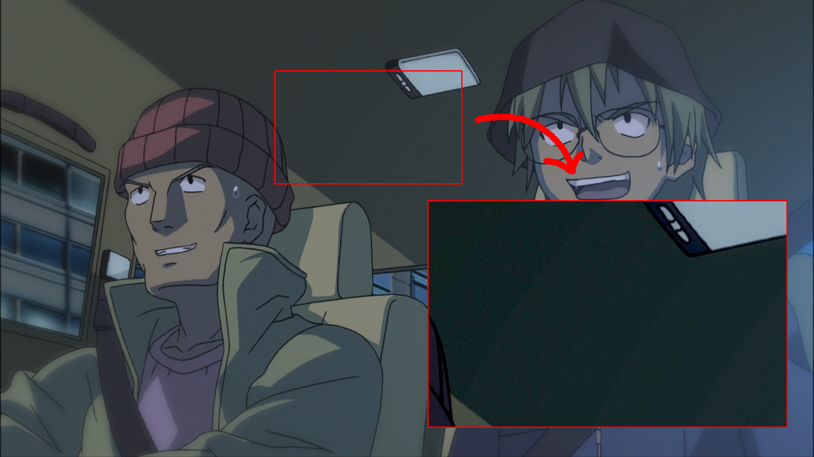

Recognizing Artifacts
Not a Filtering Guide
This page focuses on identifying artifacts rather than providing detailed filtering solutions. For specific filtering techniques, refer to the relevant pages in the filtering section of this guide, which will be linked throughout where applicable.
As a video encoder, you will inevitably encounter artifacts in your video. These are flaws in the source material, and your job is to fix them if possible, or at least to make them less noticeable. No video is perfect, but with a little bit of finesse, a lot of problems can be suppressed or even entirely eliminated.
Types of Artifacts
Most artifacts can be broadly categorized into two distinct yet closely related types:
- Mastering defects
- Authoring defects
Defect Categories Are Not Absolute
While certain artifacts tend to appear more frequently during specific stages of production, any type of defect can potentially occur at any point in the process.
For example, poor deinterlacing is commonly associated with authoring, but a studio might also apply it during mastering or send deinterlaced masters to a distributor. Similarly, compression artifacts typically arise during authoring, but can also be present in the master if it was poorly archived or transmitted.
Mastering defects
Mastering defects are imperfections inherent to the masters. These typically arise from technical limitations in the production studio's software and equipment during the mastering process. While many mastering defects are inherent to the original production process, some may be introduced later through subpar remastering.
Whether something is a mastering defect can be somewhat determined based on the kind of artifact and its origins. For example, for HD productions, most upsampling-related artifacts are likely to be caused by the studio's upscaling process, not the authoring process. Additionally, which artifacts are caused by the studio can also be determined by comparing multiple sources and seeing if the artifact is present in all of them.
Authoring defects
Authoring defects are flaws introduced into the source material during the authoring process, such as Blu-ray/DVD authoring, poor analog-to-digital transfers, or compression for streaming platforms. These artifacts commonly originate from the encoding process and various authoring tools used by distribution companies and streaming services. As a result, these defects may appear on some releases but not others, even for the same shows.
Most authoring defects are going to be either compression or metadata related. For older titles, this may also include poor deinterlacing and/or upscaling12.
Trade-offs
A common pitfall among both new encoders and those unfamiliar with encoding is believing that every single artifact must be fixed. This is far from the case. Each filter applied to a video comes with its own costs and trade-offs, and it's crucial to understand when leaving an artifact unfixed may be preferable to introducing new problems through aggressive filtering. Nearly every single filter has the potential to degrade video quality in some way.
There are some exceptions to this general rule, particularly with filters that perform the mathematical inverse of a known operation. A prime example is descaling, which reverses the upscaling process to remove artifacts introduced during upscaling, while allowing you to re-upscale the image using a much better algorithm. However, even these "inverse" filters will cause issues if misapplied, and come with their own limitations and requirements.
When deciding whether to apply filtering, you should carefully weigh the benefits against any potential drawbacks. If you're confident the pros outweigh the cons, then proceed with the filter. But if you're uncertain about potential side effects, it's often better to either skip the filter entirely or thoroughly compare the results to ensure the trade-offs are worthwhile.
Frame Composition
Before you can effectively identify and address artifacts, it's essential to understand the fundamental components that make up a frame. Different regions within a frame have distinct characteristics that make them more or less susceptible to specific types of artifacts.
The following sections break down the key regions you'll encounter and how they interact with various artifacts. By learning to recognize these distinct areas, you'll be better equipped to:
- Identify where artifacts are most likely to appear
- Understand why certain artifacts occur in specific regions
- Make informed decisions about trade-offs in your filtering choices
Different types of regions of a frame

It's recommended you open this image in a new tab and zoom in on it to get a better look at the different regions.
Flat Areas
Flat areas are regions in a frame characterized by low-frequency components and minimal pixel-to-pixel variations. These areas tend to have very subtle color and brightness transitions, if any at all.
Due to their uniform nature, flat areas are particularly susceptible to artifacts like banding, blocking, and quantization noise.
Common examples include:
- Solid colored backgrounds (e.g., title cards, UI elements)
- Clear, cloudless skies
- Smooth surfaces like walls, skin, or polished materials
- Uniform gradients (e.g., lighting transitions, shadows)
- Out-of-focus backgrounds (bokeh)
Hard Edges
Hard edges encompass any sharp, clearly defined transitions between different regions in an image. These edges provide high contrast between objects and their surroundings.
Hard edges are high-frequency information, and are therefore particularly susceptible to compression artifacting, as well as artifacting that results from poor upscaling, such as ringing, aliasing, and blurring.
Common examples include:
- Character line-art
- Text and subtitles
- Sharp boundaries between objects in the background
- Geometric shapes and patterns
- Architectural features like window frames or building edges
- Strong shadow boundaries
Textures
Textures are more complex and can contain a mix of high-frequency and low-frequency information. This makes it difficult to target them specifically without introducing unwanted detail loss.
Textures are often found in:
- Complex patterns like wallpaper or floors
- Natural elements like wood, stone, or fabric
- Detailed backgrounds like foliage or water
Dithering
Dithering is a technique used to help prevent banding and other color break-ups during compression. This is not an artifact in and of itself, but it can be difficult to immediately recognize the difference between dithering and textures, and dithering and compression noise. The big thing that usually sets them apart is the noise structure. Dithering is usually random, while textures are usually structured. Noise can still be somewhat random both spatially and temporally, but usually has a discernible structure.
The colors of noise applied for dithering will impact the noise structure as well as which frequencies they are most visible in. Some colors will be more difficult to get rid of, and may require leaving alone. In almost all cases, you will want to try to match the original noise color when redithering at the end of your filtering script.
| Noise Color | Description |
|---|---|
| White noise | Equal intensity at all frequencies |
| Blue noise | Concentrates energy in higher frequencies, perceptually uniform |
| Violet noise | Intensity increases with frequency |
| Pink noise | Intensity decreases with frequency |
| Brown noise | Intensity decreases more steeply with frequency |
Spatial vs. Temporal
Artifacts can appear either spatially, temporally, or as a combination of both:
- Spatially (static, easily visible in a single frame)
- Temporally (dynamic, visible only in motion)
Spatial artifacts are visible when looking at a single frame, and generally stay static from frame to frame. These include things like:
- Banding in gradients
- Ringing around edges
- Aliasing
- Blurring from poor upscaling
Temporal artifacts only become visible when watching the video in motion. Common examples include:
- Shimmering
- Flickering
- Motion judder
- Interlacing
Temporal artifacts are more difficult to fix and will require motion compensation to some extent, which is also rather expensive in terms of processing power.
Artifacts
This section is incomplete!
This section is a stub. You can help us by expanding it.
How can I help?
- Add more examples
- Add more explanations
- Write about other artifacts
Not Exhaustive
This list covers artifacts you are likely to encounter, but is not exhaustive. Many artifacts can manifest in different ways or combine characteristics of multiple categories (for example, poor upscaling can cause blurring, aliasing, and ringing). When diagnosing issues, focus on understanding the underlying causes rather than strict categorization.
Banding
Frame with banding
Exposure
This frame has additional exposure applied to it to help make the banding more visible in the marked region.

Banding is one of the most prevalent artifacts in digital video. It appears as visible "steps" or bands in what should be smooth gradients, such as in skies, shadows, or other areas with color transitions. This artifact occurs when there isn't enough precision to represent subtle color and brightness variations smoothly. There are two main causes:
- The video was encoded with an insufficient bit depth, meaning there aren't enough distinct values to represent smooth gradients.
- During production, processing was done at a low bit depth, introducing banding that gets "baked in" to the final output.
Most modern production workflows use 16-bit color precision during editing and VFX work. For final distribution, this is usually reduced to 10-bit, which is generally sufficient for most content. However, most consumer video content is further reduced to 8-bit color, which only allows 256 distinct values per color channel. This significant reduction in color precision often makes banding visible, especially in scenes with subtle gradients and darker areas of the image3.
| Bit Depth | Colors Per Channel |
|---|---|
| 16-bit | 65536 |
| 10-bit | 1024 |
| 8-bit | 256 |
The process to fix this is called "debanding". Additional dithering is usually applied after to preserve the gradient during the encoding stage.
Chroma banding
In some cases, banding may be more noticeable in the chroma planes than in the luma plane. This is because the chroma planes are often compressed more heavily than the luma plane.
Frame with chroma banding
Aliasing
Aliasing is a sawtooth-like artifact that occurs on hard edges. It is caused by a lack of high-frequency information, and is often a sign of poor upscaling or a lack of proper line smoothing.
There are four common causes of aliasing:
- Poor upscaling algorithms
- Poor (3D) rendering
- Binarized line art that wasn't smoothed
- Stylistic choices
Poor upscaling algorithms
Poor upscaling algorithms are the most common source of aliasing artifacts. When an image is upscaled, the algorithm must create new pixels to fill in the gaps. Most basic algorithms struggle to handle sharp transitions smoothly, resulting in jagged edges and stair-stepping patterns.
Frame with aliasing
Poor (3D) rendering
Poor rendering can cause aliasing in the same way that poor upscaling can. 3D rendered content especially is prone to aliasing when the rendering process lacks sufficient anti-aliasing or line smoothing. This is particularly noticeable on high-contrast edges and fine geometric details.
Frame with aliasing
Non-poor 3D rendering is common in western cartoons, resulting in an overall very jagged look.
Frame with aliasing
Binarized line art that wasn't smoothed
During animation production, frames are binarized to create clean, sharp lines for the coloring process. This step is normally followed by line smoothing to prevent aliasing. However, if this smoothing step is skipped, the resulting lines will still be aliased.
Frame with aliasing
Stylistic choices
Modern animation sometimes employs deliberately jagged or pixelated lines as a stylistic element. These artistic choices are usually obvious and should be preserved rather than "fixed" through anti-aliasing.
Frame with intentionally jagged lines
Ringing
Ringing refers to visible ripples or halos that appear next to sharp lines or edges in an image.
Ringing is typically caused by processes like resampling or compression, and is often most noticeable when the image has sharp transitions or has been subjected to aggressive processing.
This artifact can appear on all planes, but is often most noticeable on the luma plane.
Frame with ringing artifacts on all planes (but especially the chroma planes)

Haloing
Lowpass filters
A common source of ringing is lowpass filtering. Lowpassing is a technique used to remove high-frequency noise from a signal, often for compression or denoising purposes, but it can also and often does introduce ringing.
HDCAM SR
Frame with ringing from HDCAM SR

Another common source of excessive ringing is horizontal-only resampling common with HDCAM SR masters. These masters are resampled from 1920x1080 -> 1440x1080 -> 1920x1080, often with a ringing kernel such as Lanczos, which not only causes a lot of damage to the image quality, but also introduces very strong horizontal-only ringing.
FFT spectrum of a HDCAM SR master

A common way to determine if a source is affected by horizontal-only resampling is to check an FFT spectrum. The FFT spectrum will show a clear absence of high frequency information on the horizontal axis.
Ringing caused by HDCAM SR mastering is often impossible to remove, as when it happens, that means the master is usually stored with HDCAM SR, not an intermediary master from the distributors. In some cases, clean sources may be available4, but this is rare. If such a source is available, the method to fix it is the same as it is for other lowpass filtering,
Noise
DCT noise
Grain
Blocking
Blocking is a type of artifact that appears as blocky patterns in the image. It is often caused by compression
Frame with blocking artifacts

As this is a compression artifact, denoising and debanding is usually enough to smooth out block boundaries. In more severe cases, dedicated deblocking filters such as those found in encoders' in-loop filters, or deblocking plugins can be used to further reduce blocking.
Range compression/expansion
Luma overflow/underflow
Interlacing
Combing
Orphan Fields
Shimmering
Cross-conversion
Blending
Dimming
Point-scaled chroma
Chroma shift
Chroma bleed
Rainbowing
Dotcrawl
Double composite
IRE units
Scanning defects
Cel degradation
-
Poor deinterlacing and upscaling tend to go hand-in-hand, as to create an HD image of an interlaced/telecined source, the authoring company needs to deinterlace the video if they do not want to deal with [cross-conversion]. ↩
-
Most notorious for poor SD upscaling is the authoring company QTEC. If you're working with a QTEC SD HD upscale, you will likely want to switch gears and look at encoding the DVDs instead. ↩
-
Tom Scott's Why dark video is a terrible mess goes into more detail on why this happens. ↩
-
An example of one such case is the WEB source for One Piece's modern episodes. The blu-rays for this show use HDCAM, but the WEB masteres do not, allowing you to delowpass the BD source using the WEB source to fix the ringing. ↩